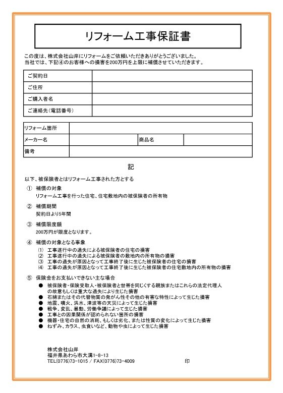
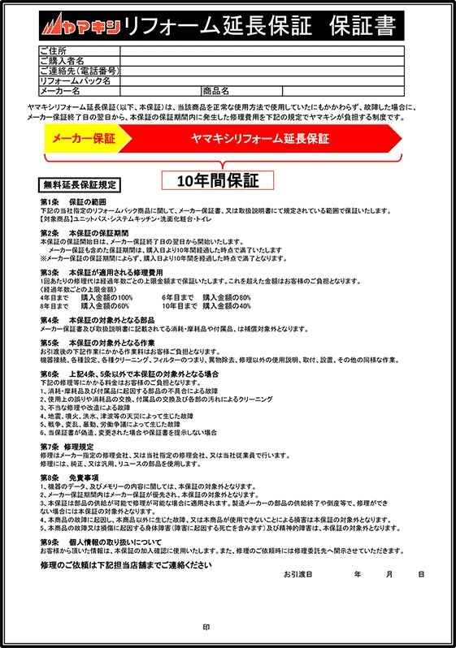

WARRANTY
WARRANTY
保証について
ヤマキシは商品と工事の両方を保証します。
工事保証は5年、商品は最長10年です。
保証書に2通りあるのを
ご存じですか？
リフォーム工事の保証には、じつは2種類あります。
住宅設備・屋根材・外壁塗料などのメーカーが「製品」に対して出す保証と、
リフォーム会社が「工事した部分」に対して自社で出す保証です。
メーカー保証
出すのはメーカー
キッチンや給湯器といった製品そのものの保証です。期間はふつう1〜2年ほど。
工事保証
出すのはリフォーム会社
配管のつなぎ方、取り付け方など、工事した部分の保証です。会社が自分で発行します。
ここを確かめてください
保証を「メーカー保証」だけにしているリフォーム会社も多くあります。 どこにお願いするか迷われたときは、その会社が自分の工事に保証を付けているかを 聞いてみてください。
ヤマキシの工事保証
期間は5年間。ヤマキシが自分で発行します。
5年間
ヤマキシは、自分たちの仕事内容と品質に誇りと責任を持っています。 そのため、メーカー保証とあわせて、工事した部分まで含めた独自の 「リフォーム工事保証書」をお渡ししています。
大工・設備・電気・塗装など、ヤマキシが手をかけた部分が対象です。

メーカー延長保証
1〜2年で終わるメーカー保証を、設置から最長10年まで延ばします。
10年まで
メーカー保証はふつう1〜2年ほどで終わってしまいます。 ヤマキシでは、そのあとも設置から最長10年まで保証を延ばせるよう、 「延長保証」をご用意しています。
水まわりパック商品は、10年の延長保証が無料でパック価格に含まれています。
水まわりパック以外の機器・設備も、有償で延長保証をお付けできます。 期間は5年・8年・10年からお選びいただけます。 金額は機器と期間によって変わりますので、お気軽にご相談ください。

ダブルで、お守りします
メーカー延長保証
最長 10 年
※水まわりパック商品は無料。
それ以外は有償になります。
リフォーム工事保証書
5 年間
※ヤマキシが自分で発行します。
保証の期間が過ぎたあとも、年中無休・24時間でトラブルに対応しています。 お近くの店舗がそのまま窓口ですので、「どこに言えばいいか分からない」ということがありません。

まずは、お困りごとから
見積り・現地調査は無料です。しつこい営業は一切いたしません。
「保証はどうなるの？」というご質問だけでも歓迎です。